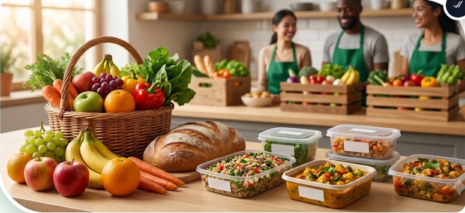

Food Saver connects donors, NGOs, volunteers, and communities through one smart platform to reduce food waste and help people in need.
Our platform provides smart and simple services that connect food donors, organizations, volunteers, and communities.
Share fresh and surplus food with trusted organizations and help reduce food waste in your community.
NGOs can discover available food, manage requests, and connect with verified donors through one platform.
Volunteers can support food pickup and delivery while helping donations reach people who need them.
Build stronger communities by connecting available food with families and people who need support.

One meal can create a big impact.
Food Saver makes food sharing simple, safe, and meaningful. Our platform connects people and organizations so surplus food can reach those who need it.
List available food, connect with trusted organizations, and complete donations easily.
We create reliable connections between donors, NGOs, and community volunteers.
Every donation helps reduce food waste and supports people in need.
Every food donation brings hope, reduces waste, and helps build a stronger community.
Food Donations
People Supported
Partner Organizations
Active Volunteers
Join Food Saver today and become part of a community that turns surplus food into meaningful support.